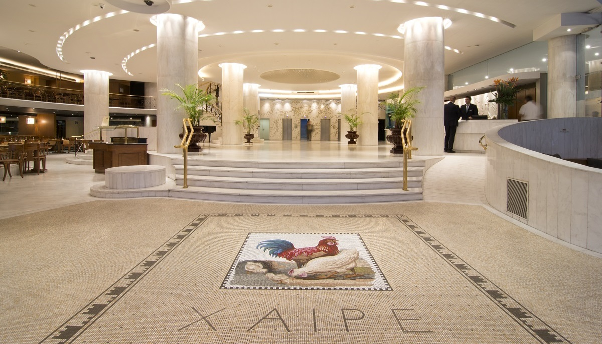
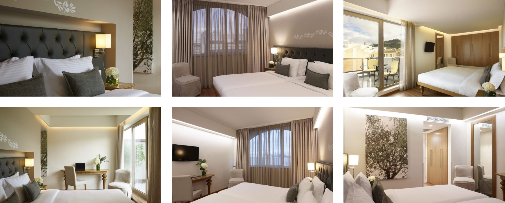
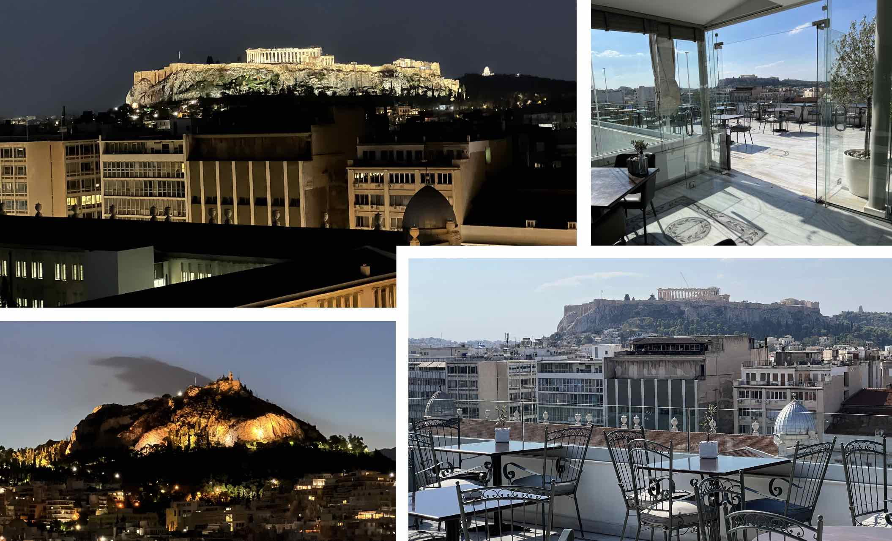
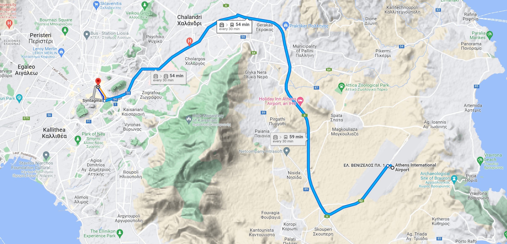
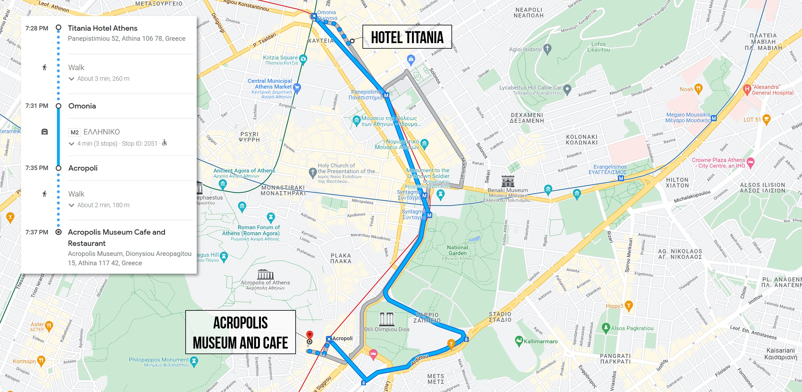

We hope you will join us in beautiful Athens for ASSETS’22—the first time our conference has been in-person since ASSETS’19 in Pittsburgh. For those who cannot travel to ASSETS due to COVID, we will also be providing a lightweight virtual conference experience. Please see our Attending Overview page.
Conference Location
ASSETS 2022 will be held at the newly renovated Hotel Titania in the heart of Athens, Greece between Syntagma and Omonia squares and Metro stations Panepistimio & Omonia. To get to the hotel, you can take the Metro, which provides accessible transit from the airport. See our travel information below.
To protect the health and safety of our community, we require that all on-site attendees have proof of full vaccination or a legitimate medical or religious exemption. Additionally, we will be requiring masks at all conference events. We strongly encourage a well-fitting, high filtration mask such as a N95, KF94, FFP2, or KN95 mask. See our COVID Information and Safety Plan section below.

Conference Space
The conference will take place on the Mezzanine Level of Hotel Titania. The registration booth—to pick up your conference badge and lanyard—will be located in the Mezzanine Foyer.
Enter the Mezzanine Foyer via stairs or elevators. From the foyer, you can access bathrooms, Olympia Hall, and the Vergina Room. Head down Olympia Hall to the main conference presentation area—the Niki-Apollon-Athina room.
- Main conference presentation room: Niki-Apollon-Athina room
- Lunch area: Vergina Room (across from Niki-Apollon-Athina)
- Poster/demo space: Olympia Hall and Mezzanine Foyer
- Registration booth: Mezzanine Foyer
Accommodations
Hotel Titania offers Standard Rooms, Superior Rooms, Executive Rooms, Deluxe Rooms, and Suites. As part of the conference, we have negotiated Superior Room rates for 150€ per night, which includes breakfast at the hotel's designated areas as well as local taxes and VAT.
Recall that lunch is provided as part of your conference registration as well as dinners on Mon, Oct 24th and Tues, Oct 25th.

Room Reservations
To book a room, please use this special booking link created specifically for ASSETS'22 by Hotel Titania.
- You must book by Oct 1, 2022 to receive the guaranteed price and for us to meet our contractual obligations to the hotel.
- If you find a lower rate than 150€ online, please let us know. All lower rates will be honored by the hotel and counted towards fulfilling our room block commitments.
- You can receive the group rate (150€/night) for three days before/after the conference, subject upon availability
Accessible Rooms
The hotel features 15 accessible rooms on the 4th, 5th, and 6th floors with wheelchair-accessible bathrooms.
- If you require an accessible room, please select the checkbox "Room for people with disability needs" when booking and add in additional information in the "Special requests/remarks" text field.
- For the wheelchair accessible bathrooms, there is a roll-in shower, hand-held shower heads and grab bars.
- Unfortunately, the hotel alarm system does not have a visual notification system.
Please also do not hesitate to reach out to the Accessibility Chairs for questions or additional help.
Breakfast
If you are staying at Hotel Titania, breakfast is included at the beautiful Olive Garden on the 11th floor with views of the Acropolis and Lycabettus Hill. The breakfast buffet provides many traditional Greek foods. You can choose to eat inside or outside on the balcony. If you eat outside, make sure to bring a jacket as the mornings can be cold.

Travel to Hotel Titania
From The Airport to Hotel Titania
The easiest way to get to Hotel Titania is from the Athens Metro (train), which takes roughly an hour. Here's the link to the airport-to-hotel route on Google Maps with a screenshot of the route below.

Directions:
- From the airport, take the Blue Line (Line 3 - direction ‘Egaleo’) and get off at Syntagma station.
- From Syntagma station you can either take:
- The Red Metro Line (Line 2 - direction ‘Aghios Antonios’) and get off at Panepistimiou station (Exit: National Library). From Panepistimiou station, walk/roll to Titania Hotel
- Walk/roll from Syntagma Square to Titania Hotel. It is approximately 1km (Google Maps link)
Off-site Reception on Tues, Oct 25th
On Tuesday, Oct 25th from 8-11:30PM, we will have an off-site reception at the beautiful Acropolis Museum and Cafe with a private tour of the museum. If you would like to take a special guest, please be sure to purchase an additional conference reception ticket for $85 on CVENT. You must bring your conference badge and identification to the museum.
Reception Agenda
- 07:30-07:50PM:Transit yourself to the Acropolis Museum and Cafe. The Athens Metro leaves every 7 minutes from Hotel Titania to the museum or you could choose to walk/roll (2km).
- 08:00-09:00PM: Take a guided tour of the museum. We have pre-arranged seven guided tours. You must be on a tour to visit the museum after hours.
- 08:00-11:30PM: Eat at the Acropolis Cafe. After the tour, enjoy a menu of Greek cuisine including house-baked bread served with marinated olives, split peas cream with caramelized onions, tomato jam, and octopus cakes; greek salad, sautteed sea bass with kakavia fish sauce and steamed mussels, and lemon pie. (vegetarian options available).
Travel to Acropolis Museum and Cafe
You are responsible for traveling to the Acropolis Museum and Cafe for the reception. We recommend the Athens Metro, which provides accessible transit services from Hotel Titania to the museum every seven minutes. You could also choose to walk/roll—the distance is 2km.
Below, we have included a screenshot of the Athens Metro route with timings to arrive at the museum by ~7:40PM. Here's the direct link to the Athens Metro route from the hotel to museum on Google Maps.

COVID Information and Safety Plan
For official information related to COVID and travel, please see the Greek government's official website and the Athens airport travel page. The Greek National Tourism Organization launched the Visit Greece app (Google Play, App Store), which includes detailed COVID-19 travel updates, as well as a map of COVID-19 diagnostic testing locations. The number for emergency assistance is 166.
- Before the conference, we ask that you conduct a COVID test (either PCR or antigen) within three days of Oct 23 and kindly ask that you not travel if the test is positive or if you feel sick.
- En route to the conference. While many airlines and rail transport no longer require masking, we ask that you use a high-filtration, closely fitting mask such as a N95, FFP2, KF94, or KN95 while traveling to the conference, including on all public transportation (which is currently mandatory in Greece).
- Vaccination status. We require that all on-site attendees have proof of full vaccination or a legitimate medical or religious exemption. Note that as of May 1, 2022, the Greek government no longer requires proof of vaccination to travel to the country.
- Masking. We will be requiring masks at all conference events. We strongly encourage a well-fitting, high filtration mask such as a N95, KF94, FFP2, or KN95 mask (see this NYTimes article). We are working to provide a backup stock at the conference; however, please bring enough supply for yourself so you can wear a fresh mask each day. As of June 1, 2022, Greece no longer requires masking indoors; however, masks are still required on public transit and in healthcare facilities (source).
- Eating/drinking. Traditionally, ASSETS provides food/drink during conference breaks, for lunch, and during social events. We are working with the hotel and our social event venues to determine takeaway options for attendees to eat outside if they prefer. For this, we suggest bringing a washable (e.g., rubbermaid, pyrex) or disposable container as we cannot guarantee that our food providers will have "togo" boxes.
- Feeling sick? If you feel sick during the conference, please send an email to conferencestaff@acm.org, take a rapid antigen test, and stay in your hotel room. When in doubt, take steps to minimize contact with others. Please bring some rapid tests with you to the conference; we will have a small number of backups.
- Reporting. All attendees at ASSETS agree to self-monitor for signs and symptoms of COVID and to contact ACM's official reporting contact conferencestaff@acm.org if you test positive for COVID within 10 days after participating.
We will continuously monitor COVID information in Athens and international health recommendations. The above list is subject to change.
More about Masking
We require masks at all conference events and ask that you also wear masks while using public transit. Speakers can take off their mask for the duration of their talks. If you have forgotten a mask, we have some N95s as a backup. You can get them from the registration desk. Please be aware that ASSETS leadership and student volunteers will be monitoring mask usage and will kindly remind you to use a mask during our events.
Some of you have asked about whether to wear clear masks—which allow others to see your lips and thus have certain accessibility advantages—or traditional high-filtration masks like N95s. This is a personal choice. We have purchased 50 clear masks from BendShape (25 small; 25 medium) in addition to 160 3M 9205 N95 Aura masks.
For context, Hybrid Experience Chair, Professor Christian Vogler, shares his experience with BendShape masks at Gallaudet University: "clear masks have very poor acoustic properties. so a person who has to speak through them will be noticeably harder to understand than someone who just uses a well-fitting KN95, FFP2 or N95 mask. They are indicated if someone in the audience relies on facial cues for access (for sign language), or on lip-reading."
Thus, Christian makes the following recommendation:
- If the presenter is signing, use clear masks (or no mask)
- If the presenter is speaking to a hearing audience and the interpreters and captioners have access needs fully covered, use a standard high-filtration mask
- If a speaking presenter would like to offer accessible facial cues and lip movements to the audience, they need to enunciate very clearly to ensure that access is not worse for people (including some deaf/hard of hearing people) who primarily rely on auditory cues and to ensure that the captioners and interpreters can still understand their speech.
Visa Support Letter
ACM is able to provide visa support letters to attendees as well as authors with accepted papers, posters, or members of the conference committee.
For visa support letters, refer all requests to supportletters@acm.org. Please allow up to 10 business days to receive a letter. All requests are handled in the order they are received. The information below should be included with the request:
- Your name as it appears on your passport
- Your current postal mailing address
- The name of the conference you are registering for. Only accepted authors may request a visa support letter prior to registering for the conference.
- Your registration confirmation number
- If you have any papers accepted for the conference, please provide the title and indicate whether you are the “sole author” or a “co-author”.
- Authors may indicate their paper title. If no paper, speakers can provide the title of their presentation.
ACM does not provide letters for transport of vendor or presenter equipment. ACM suggests shipping the materials insured to the conference facility.